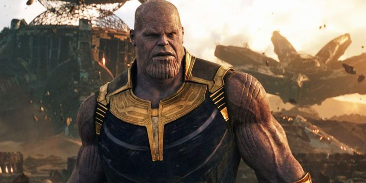
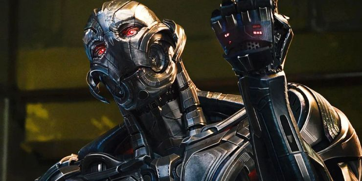
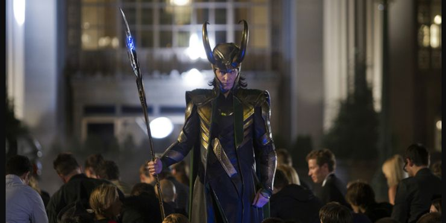

|  |
Thanos - Josh Brolin As Thanos
- While other villains have presented threats to the Avengers, none of them have been able to compare to the Mad Titan Thanos. Serving as the looming threat throughout the entire Infinity Saga, Thanos was on a mission to unite the six Infinity Stones so he could wipe out half the universe, a feat he accomplished in Infinity War. His victory was undone in Endgame, and he was ultimately defeated by Iron Man, but it took essentially every single hero in the MCU coming together to stop him
- Thanos was originally played by actor and stuntman Damion Poitier in the post-credits scene for The Avengers before being played by Josh Brolin for the rest of his MCU appearances. Josh Brolin is a talented actor with a diverse filmography including The Goonies, No Country for Old Men, and Deadpool 2
|
 |
Corvus Glaive - Michael James Shaw
- The final member of the Black Order was Corvus Glaive, another adopted son of Thanos. He accompanied Proxima Midnight on the unsuccessful ambush of Vision and Wanda Maximoff in Infinity War. During the Battle of Wakanda, Corvus Glaive attempted to break into Shuri's lab and retrieve the Mind Stone. His plan failed and he was killed by Vision.
- Corvus Glaive was voiced by actor Michael James Shaw. He has appeared in television shows such as Limitless, Constantine, and is set to play the character Mercer in The Walking Dead.
|
 |
Proxima Midnight - Carrie Coon
- Proxima Midnight was another member of the Black Order and the adopted daughter of Thanos. She was a fierce warrior who almost captured an Infinity Stone when she ambushed Vision and Wanda Maximoff in Infinity War. She nearly killed Okoye and Black Widow before she was killed by Wanda Maximoff during the Battle of Wakanda.
- Proxima Midnight was voiced by Emmy and Tony-nominated actress Carrie Coon, who has appeared in Gone Girl, as well as the shows The Leftovers, The Sinner, and Fargo.
|
 |
Cull Obsidian - Terry Notary
- Cull Obsidian was the most physically intimidating member of the Black Order. His massive size and strength made him a dangerous opponent for the Avengers as he fought against them multiple times in Infinity War and Endgame. He was eventually killed by Bruce Banner in the Battle of Wakanda in Infinity War and the alternate timeline version of Cull Obsidian died in Endgame when he was stepped on by the giant version of Ant-Man during the final battle.
- Cull Obsidian was played by actor and notable stuntman Terry Notary who has done motion capture and stunt work on numerous blockbusters including The Incredible Hulk, Superman Returns, and Avatar.
|
 |
Ebony Maw - Tom Vaughan-Lawlor
- In Avengers: Infinity War and Avengers: Endgame, the world's mightiest heroes squared off against Thanos and his Black Order. The most prominent member of the Black Order was Ebony Maw, the telekinetic. He was killed in Infinity War when he was ejected into space in Spider-Man's Alien-themed plan. It was the alternate timeline version of Ebony Maw that realized Nebula was from another timeline, putting the Avengers' plan in jeopardy in Endgame.
- Irish actor Tom Vaughan-Lawlor portrayed Ebony Maw via motion capture and voice acting. His acting credits include the shows Peaky Blinders and Love/Hate.
|
|  |
Ultron - James Spader
- The titular villain of Avengers: Age of Ultron, Ultron was the result of Tony Stark's failed attempt to use the Infinity Stone from Loki's scepter to create an artificial intelligence program that would protect the earth. Ultron attempted to destroy humanity and was defeated by the Avengers but the fallout from their battle in Sokovia had a lasting impact on the MCU.
- Ultron was voiced by veteran actor James Spader. He has appeared in movies such as Crash and Stargate in addition to television shows that include Boston Legal, The Office, and The Blacklist.
|
 |
Ulysses Klaue - Andy Serkis
- When Ultron wanted to upgrade his physical form in Avengers: Age of Ultron, he turned to black-market trader Ulysses Klaue. Ulysses Klaue stole billions of dollars worth of vibranium from Wakanda, allowing Ultron to create a stronger body for himself. In a fit of rage, Ultron ended up cutting off one of Klaue's arms during their deal. Ulysses Klaue was eventually killed by Killmonger in Black Panther.
- The role of Ulysses Klaue provided Andy Serkis with an opportunity to show his actual face on the screen. Andy Serkis is best known for his groundbreaking motion-capture work as Gollum in the Lord of the Rings franchise, Caesar in the Planet of the Apes movies, and King Kong in Peter Jackson's King Kong. He is also the director of the upcoming movie Venom: Let There Be Carnage and will play Alfred Pennyworth in The Batman.
|
 |
Baron Wolfgang Von Strucker
- Avengers: Age of Ultron began with a demonstration of the Avengers' improved teamwork as they raided a Hydra base in Sokovia. They captured the base's commanding officer, Baron Wolfgang von Strucker, who had been experimenting on the tragic Maximoff twins, using Loki's scepter to give the two superhuman abilities. He was later killed by Ultron as a statement to the Avengers.
- German actor Thomas Kretschmann played Baron Wolfgang von Strucker. He has appeared in films such as The Pianist, Downfall, 2005's King Kong, and Resident Evil: Apocalypse.
|
 |
The Other - Alexis Denisof
- In The Avengers, the key to Loki's plan for world domination was the Chitauri army. The army was given to him by their leader, an alien known as the Other. In the post-credits scene, it is revealed that the Other was working for Thanos all along. The Other was later killed by Ronan the Accuser in Guardians of the Galaxy.
- The Other was played by Alexis Denisof, who had previously collaborated with The Avengers director Joss Whedon when he appeared on Buffy the Vampire Slayer and Angel as the character Wesley Wyndam-Pryce.
|
|  |
Loki - Tom Hiddleston
- In The Avengers, the team members spent nearly as much time fighting each other as they did fighting against the actual villain of the film, Loki. Armed with the Tesseract, his scepter, and a Chitauri army, Loki was a worthy first test for the Avengers but ultimately proved to be no match for their combined strength.
- The role of Loki in the MCU has made actor Tom Hiddleston into a household name. The actor has appeared in movies such as Kong: Skull Island and Crimson Peak and will return to the role that made him famous in the upcoming Disney+ show Loki.
|